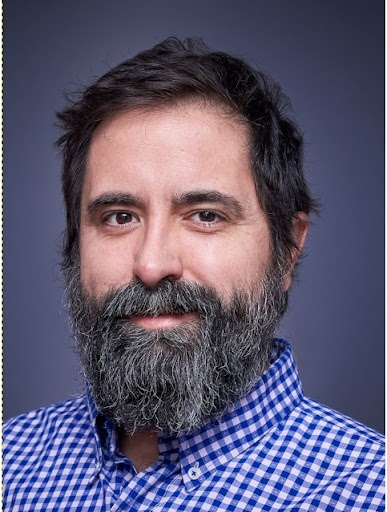

Pablo Daniel Limardo
Habilidades
- Desarrollo de Software: Python, JavaScript, HTML, CSS, SQL y C++
- Inteligencia Artificial: Integración de IA, Pensamiento Computacional, Algoritmos, Gemini, NotebookLM, IA Studio, Claude y ChatGPT
- Herramientas: Arduino, Docker, Git, JIRA, MERN
- Metodologías: Ágiles, Scrum, Vibe Coding
Perfil Profesional
Técnico en Computación y docente con amplia experiencia en desarrollo de software y aplicaciones SCADA. Especializado en encontrar e implementar soluciones tecnológicas que optimicen procesos y mejoren la calidad de vida. Mi trayectoria en el área educativa, mi experiencia en asesoría **freelance** para mantener contacto con el sector productivo y mi constante actualización en el campo de la Inteligencia Artificial y el desarrollo de software me han dotado de las herramientas necesarias para guiar a equipos en la integración de nuevas tecnologías. Busco aplicar mi pasión por la innovación y el **trabajo en equipo** para contribuir al avance tecnológico en el sector educativo.
Experiencia Laboral
Docente
Escuela Industrial Nº9 El Calafate (2021 - Presente)
- Enseñanza de programación y desarrollo de aplicaciones SCADA.
- Formación de futuros profesionales en automatización y control de procesos industriales.
- Integración de conceptos de lógica computacional y pensamiento algorítmico.
Consultor Digital (Freelance)
2019 - Presente
- Desarrollo de estrategias y herramientas digitales para el crecimiento de PYMES y emprendedores.
- Asesoramiento en la digitalización de negocios y optimización de flujos de trabajo.
Co-fundador
PIA Agencia (2017 - 2019)
- Liderazgo en el desarrollo de marketing digital, contenidos y soluciones web.
- Gestión de equipos y proyectos para asegurar la entrega de servicios de alta calidad.
Gerente Técnico
COTECAL (2003 - 2015)
- Desempeño de diversas funciones de liderazgo en el departamento técnico.
- Responsable de la gestión del equipo, asegurando la eficiencia y el cumplimiento de los objetivos.
Formación Académica y Complementaria
Talleres de Formación en IA y Pensamiento Computacional
2024 - 2021
Capacitación sobre la integración de la Inteligencia Artificial y el pensamiento computacional en el ámbito educativo para optimizar los procesos de enseñanza.
Estudios Formales
- Tecnicatura Universitaria en Programación (UTN, en curso, 1er año)
- Programa de reconversión IT (2021)
- Técnico en Computación (ENET Nº26 "Confederación Suiza", 1993 - 1998)